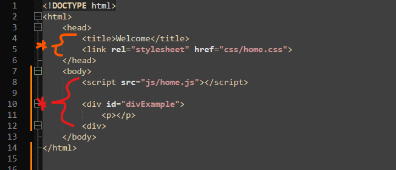

Simple Number Counter
Create your files
You will need 2 files:
- counter.html
- counter.js
Visual Studio Code to create new files, save as.
Open your file in chrome
find counter.html in your finder app
- command + click
- open with chrome
- you only need to open the html page in chrome
Open your newly created files in Visual Studio Code (They will be empty)
You will need both files:
- counter.html
- counter.js
STOP! Check in.
At this point you will have two applications running on your computer, Visual Studio and Google Chrome.
- In Visual Studio, make a change to you counter.html file and save it.
{ add this line to your file counter.html : <!DOCTYPE html><html><head></head><body><p>foobar</p></body></html> }
- Save the file counter.html in Visual Studio
- Open the file counter.html in google chrome, refresh the browser.
- You should see "foobar"
If you are able to see foobar at this stage, continue
- Remove the contents of the counter.html file, it should be fully empty.
- Navigate to mr_c/project_template
- open the file index_template.html in Visual Studio
- Copy the code verbatim (word for word) into your counter.html file.
Redo these steps with javascript files
- Navigate to mr_c/project_template
- open the file mr_c_counter.js in Visual Studio
- Copy the code verbatim (word for word) into your counter.js file.
What Mr. C Means when he says "inside the body/head"

- Orange inside the head means that the browser will read this information and relay it, before rendering it.
- Red means inside the body which is where the stuff you put in your files is visualized on screen, as set by the rules you set in the head.
Start to use the javascript file provided
- In Visual Studio go to counter.html
- In the head,
- change the title to counter
- In the body,
- change the line "<script src="js/home.js"></script>" to "<script src="counter.js"></script>"
- add a button that hits the the function <button type="button" onclick="addOne()">Click me</button>
- add a field to keep track of the counter <p>Clicks: <a id="clicks">0</a></p>
- Save in Visual Studio
-Refresh in google chrome
That is it..... Kinda
- If you want to challenge your friends
- See who's number can go up the highest.
(hint altering the javascipt function will be easier than clicking the button)